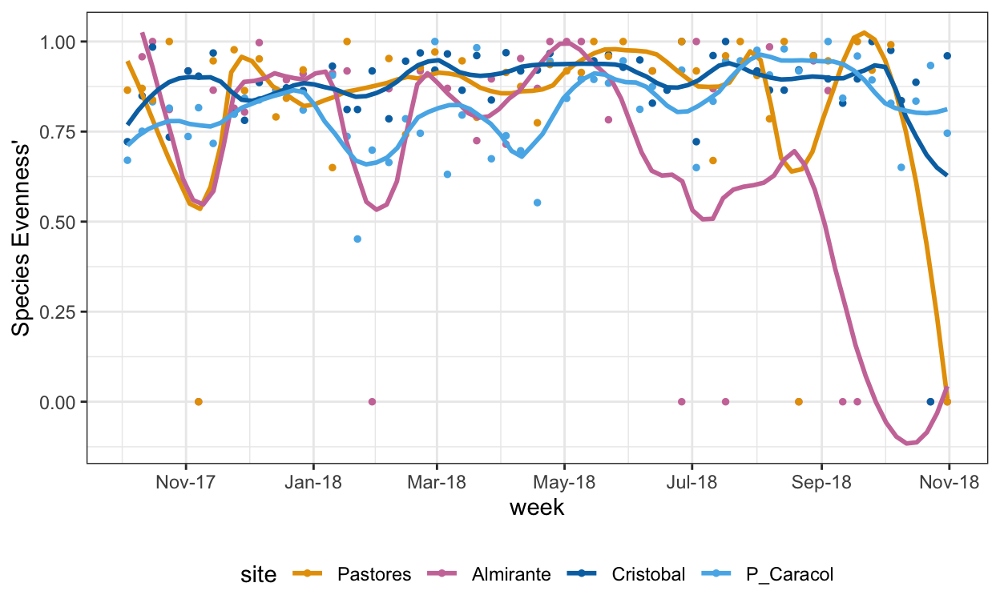

Hit the Hide Code button to hide the R code.
Summary
This workflow contains diversity assessments for the full data setall samplesand a condensed short data setsamples averaged by site and season. In order to run the workflow, you need the output files T_REPO_raw.csv or macro_short1.csv. See the Data Availability page for complete details.
The macrofaunal community; raw untransformed counts:
par(mar=c(2,10,2,2)) # adjusts the margins
boxplot(ds[,16:32],horizontal = TRUE,las=2, main="Abundance")
Calculate Alpha diversity
A) Shannon's Diversity H'
B) Observed Richness (\# of species)
C) Pielou's Evennness
D) Inverse Simposon Diversity
E) Renyi's Entropy# Shannon's H'
H_short <- diversity(short.data)
H_long <- diversity(ds.data)
# Observed Richness
richness_short <- specnumber(short.data)
richness_long <- specnumber(ds.data)
# Pielou's Evenness
evenness_short <- H_short/log(richness_short)
evenness_long <- H_long/log(richness_long)
# Inverse simpson
inv_simpson_long <- diversity(ds.data, index = "invsimpson", base = 2)
inv_simpson_short <- diversity(short.data, index = "invsimpson", base = 2)
# Renyi entropy as diversity measure
R <- renyi(ds.data, scales = 2)
N2 <- renyi(ds.data, scales = 2, hill = TRUE) # inverse simpson
k <- sample(nrow(ds.data), 6)
R <- renyi(ds.data[k,])
Rs <- renyi(short.data, scales = 2)
N2s <- renyi(short.data, scales = 2, hill = TRUE) # inverse simpson
ks <- sample(nrow(short.data), 8)
Rs <- renyi(short.data[ks,])Some data exploration look at the Renyi entropy of the 8 samples from the condensed data-set. This includes a plot for each site and season, and it is clear there are differences between the sites and seasons. There is also some evidence of differences through time (i.e.x-axis) at some of the sites/seasons. We are looking at where the circles fall within the mean (pink dashed lines) and standard deviation (green dashed lines) in each sample.
plot(Rs, main = "Renyi Diversity plot; shortened dataset")
Create alpha diversity data-frame including environmental data.
# long data
alpha <- cbind(shannon = H_long, richness = richness_long, pielou = evenness_long, inv_simpson = inv_simpson_long, env.data, site.data)
# short data
alpha_s <- cbind(shannon = H_short, richness = richness_short, pielou = evenness_short, inv_simpson = inv_simpson_short, env_s.data, site_s.data)Plot Alpha Diversity
These are violin plots to visualize the distribution of the diversity metrics at each site.
A bit easier to visualize with the condensed, short dataset:
These graphs illustrate the differences between alpha diversity metrics and the relationship between species richness, Pielous evenness, and Shannons H. Punta Caracol and Pastores are two sites with similar Shannons H scores, however, this is resultant of distinct mechanisms. P. Caracol has a large number of species (high species richness) but is relatively uneven (low Pielous Evenness), resulting in a moderate Shannons H. Pastores, in contrast, has a small number of species but is very even, also resulting in a moderate Shannons H. Alpha diversity is structured very differently at P. Caracol compared with Pastores, but if we had used Shannons H alone we may not have identified these important differences.
Almirante has relatively how Shannons H, which is matched by low species richness and high evenness. From the large difference between the Cristobal point, it appears that the season is important in driving alpha diversity measures (H, richness and evenness to a lesser extent).
Environmental Effects
Simple linear models between diversity metrics and environmental conditions.
A) Temperature (Celsius)
B) Salinity (psu)
C) Dissolved Oxygen or 'DO' (mg/L)
D) pH (NBS scale)
E) Chlorophyll concentration (ug/L)
F) Cyanobacteria/Blue Green Algae concentration (ug/L)First, with the full dataset, assess relationships between Shannons Diversity and the environmental conditions. Additionally, look at the same relationships within the hypoxic and normoxic season (HS and NS).
summary(lm(shannon ~ temp, alpha))
summary(lm(shannon ~ sal_psu, alpha)) # negative, significant *
summary(lm(shannon ~ DO_mgL, alpha)) # positive, sig. ***
summary(lm(shannon ~ pH, alpha)) # positive, sig. ***
summary(lm(shannon ~ as.numeric(Chlorophyll_ugL), alpha))
summary(lm(shannon ~ as.numeric(BGA_ugL), alpha))
alpha1 <- alpha[alpha$season != "HS",] # normoxic season
summary(lm(shannon ~ temp, alpha1))
summary(lm(shannon ~ sal_psu, alpha1))
summary(lm(shannon ~ DO_mgL, alpha1)) # positive, sig. ***
summary(lm(shannon ~ pH, alpha1)) # positive, sig. **
summary(lm(shannon ~ as.numeric(Chlorophyll_ugL), alpha1))
summary(lm(shannon ~ as.numeric(BGA_ugL), alpha1)) # negative, sig * only in reduced data-set
alpha2 <- alpha[alpha$season == "HS",] #hypoxic season
summary(lm(shannon ~ temp, alpha2))
summary(lm(shannon ~ sal_psu, alpha2)) # negative, sig. **
summary(lm(shannon ~ DO_mgL, alpha2)) # positive, sig. ***
summary(lm(shannon ~ pH, alpha2)) # positive, sig. ***
summary(lm(shannon ~ as.numeric(Chlorophyll_ugL), alpha2))
summary(lm(shannon ~ as.numeric(BGA_ugL), alpha2))
Detailed results of Alpha Diversity & Environmental Parameter ANOVA tests
summary(lm(shannon ~ temp, alpha))
Call:
lm(formula = shannon ~ temp, data = alpha)
Residuals:
Min 1Q Median 3Q Max
-1.03332 -0.31865 0.08596 0.39612 1.13972
Coefficients:
Estimate Std. Error t value Pr(>|t|)
(Intercept) 2.00202 1.03686 1.931 0.0548 .
temp -0.03588 0.03594 -0.998 0.3192
---
Signif. codes: 0 '***' 0.001 '**' 0.01 '*' 0.05 '.' 0.1 ' ' 1
Residual standard error: 0.5754 on 219 degrees of freedom
(1 observation deleted due to missingness)
Multiple R-squared: 0.00453, Adjusted R-squared: -1.552e-05
F-statistic: 0.9966 on 1 and 219 DF, p-value: 0.3192summary(lm(shannon ~ sal_psu, alpha)) # negative, significant *
Call:
lm(formula = shannon ~ sal_psu, data = alpha)
Residuals:
Min 1Q Median 3Q Max
-1.14523 -0.29470 0.08066 0.39055 1.17192
Coefficients:
Estimate Std. Error t value Pr(>|t|)
(Intercept) 6.68628 1.99911 3.345 0.000969 ***
sal_psu -0.16061 0.05614 -2.861 0.004631 **
---
Signif. codes: 0 '***' 0.001 '**' 0.01 '*' 0.05 '.' 0.1 ' ' 1
Residual standard error: 0.5663 on 219 degrees of freedom
(1 observation deleted due to missingness)
Multiple R-squared: 0.03603, Adjusted R-squared: 0.03163
F-statistic: 8.186 on 1 and 219 DF, p-value: 0.004631summary(lm(shannon ~ DO_mgL, alpha)) # positive, sig. ***
Call:
lm(formula = shannon ~ DO_mgL, data = alpha)
Residuals:
Min 1Q Median 3Q Max
-1.18307 -0.31448 0.01563 0.36922 1.19655
Coefficients:
Estimate Std. Error t value Pr(>|t|)
(Intercept) 0.62216 0.06719 9.260 < 0.0000000000000002 ***
DO_mgL 0.11241 0.01848 6.082 0.00000000522 ***
---
Signif. codes: 0 '***' 0.001 '**' 0.01 '*' 0.05 '.' 0.1 ' ' 1
Residual standard error: 0.5335 on 219 degrees of freedom
(1 observation deleted due to missingness)
Multiple R-squared: 0.1445, Adjusted R-squared: 0.1406
F-statistic: 36.99 on 1 and 219 DF, p-value: 0.000000005224summary(lm(shannon ~ pH, alpha)) # positive, sig. ***
Call:
lm(formula = shannon ~ pH, data = alpha)
Residuals:
Min 1Q Median 3Q Max
-1.22136 -0.31175 0.05705 0.36018 1.19604
Coefficients:
Estimate Std. Error t value Pr(>|t|)
(Intercept) -5.2383 1.1816 -4.433 0.000014686 ***
pH 0.7681 0.1462 5.255 0.000000351 ***
---
Signif. codes: 0 '***' 0.001 '**' 0.01 '*' 0.05 '.' 0.1 ' ' 1
Residual standard error: 0.5435 on 219 degrees of freedom
(1 observation deleted due to missingness)
Multiple R-squared: 0.112, Adjusted R-squared: 0.1079
F-statistic: 27.61 on 1 and 219 DF, p-value: 0.0000003513summary(lm(shannon ~ as.numeric(Chlorophyll_ugL), alpha))
Call:
lm(formula = shannon ~ as.numeric(Chlorophyll_ugL), data = alpha)
Residuals:
Min 1Q Median 3Q Max
-0.98104 -0.33405 0.08071 0.39144 1.11485
Coefficients:
Estimate Std. Error t value
(Intercept) 0.982122 0.048159 20.393
as.numeric(Chlorophyll_ugL) -0.004143 0.008177 -0.507
Pr(>|t|)
(Intercept) <0.0000000000000002 ***
as.numeric(Chlorophyll_ugL) 0.613
---
Signif. codes: 0 '***' 0.001 '**' 0.01 '*' 0.05 '.' 0.1 ' ' 1
Residual standard error: 0.5764 on 219 degrees of freedom
(1 observation deleted due to missingness)
Multiple R-squared: 0.001171, Adjusted R-squared: -0.00339
F-statistic: 0.2567 on 1 and 219 DF, p-value: 0.6129summary(lm(shannon ~ as.numeric(BGA_ugL), alpha))
Call:
lm(formula = shannon ~ as.numeric(BGA_ugL), data = alpha)
Residuals:
Min 1Q Median 3Q Max
-0.97266 -0.33173 0.08471 0.38622 1.11434
Coefficients:
Estimate Std. Error t value Pr(>|t|)
(Intercept) 0.9731847 0.0457487 21.272 <0.0000000000000002
as.numeric(BGA_ugL) -0.0006683 0.0029277 -0.228 0.82
(Intercept) ***
as.numeric(BGA_ugL)
---
Signif. codes: 0 '***' 0.001 '**' 0.01 '*' 0.05 '.' 0.1 ' ' 1
Residual standard error: 0.5767 on 219 degrees of freedom
(1 observation deleted due to missingness)
Multiple R-squared: 0.0002379, Adjusted R-squared: -0.004327
F-statistic: 0.0521 on 1 and 219 DF, p-value: 0.8197alpha1 <- alpha[alpha$season != "HS",] # normoxic season
summary(lm(shannon ~ temp, alpha1))
Call:
lm(formula = shannon ~ temp, data = alpha1)
Residuals:
Min 1Q Median 3Q Max
-0.99444 -0.30186 0.05859 0.34558 1.18577
Coefficients:
Estimate Std. Error t value Pr(>|t|)
(Intercept) 2.03728 1.60998 1.265 0.208
temp -0.03862 0.05683 -0.680 0.498
Residual standard error: 0.5641 on 112 degrees of freedom
Multiple R-squared: 0.004107, Adjusted R-squared: -0.004785
F-statistic: 0.4619 on 1 and 112 DF, p-value: 0.4981summary(lm(shannon ~ sal_psu, alpha1))
Call:
lm(formula = shannon ~ sal_psu, data = alpha1)
Residuals:
Min 1Q Median 3Q Max
-0.96924 -0.29875 0.07467 0.37343 1.14684
Coefficients:
Estimate Std. Error t value Pr(>|t|)
(Intercept) 1.82347 3.16981 0.575 0.566
sal_psu -0.02476 0.08919 -0.278 0.782
Residual standard error: 0.565 on 112 degrees of freedom
Multiple R-squared: 0.0006876, Adjusted R-squared: -0.008235
F-statistic: 0.07706 on 1 and 112 DF, p-value: 0.7818summary(lm(shannon ~ DO_mgL, alpha1)) # positive, sig. ***
Call:
lm(formula = shannon ~ DO_mgL, data = alpha1)
Residuals:
Min 1Q Median 3Q Max
-1.11564 -0.29638 0.04124 0.30533 1.24180
Coefficients:
Estimate Std. Error t value Pr(>|t|)
(Intercept) 0.37695 0.11339 3.324 0.0012 **
DO_mgL 0.14953 0.02723 5.491 0.000000252 ***
---
Signif. codes: 0 '***' 0.001 '**' 0.01 '*' 0.05 '.' 0.1 ' ' 1
Residual standard error: 0.5017 on 112 degrees of freedom
Multiple R-squared: 0.2121, Adjusted R-squared: 0.2051
F-statistic: 30.16 on 1 and 112 DF, p-value: 0.0000002519summary(lm(shannon ~ pH, alpha1)) # positive, sig. **
Call:
lm(formula = shannon ~ pH, data = alpha1)
Residuals:
Min 1Q Median 3Q Max
-1.10580 -0.28904 0.02545 0.32744 1.22569
Coefficients:
Estimate Std. Error t value Pr(>|t|)
(Intercept) -3.7117 1.7424 -2.130 0.03534 *
pH 0.5728 0.2143 2.673 0.00864 **
---
Signif. codes: 0 '***' 0.001 '**' 0.01 '*' 0.05 '.' 0.1 ' ' 1
Residual standard error: 0.548 on 112 degrees of freedom
Multiple R-squared: 0.05997, Adjusted R-squared: 0.05157
F-statistic: 7.145 on 1 and 112 DF, p-value: 0.008642summary(lm(shannon ~ as.numeric(Chlorophyll_ugL), alpha1))
Call:
lm(formula = shannon ~ as.numeric(Chlorophyll_ugL), data = alpha1)
Residuals:
Min 1Q Median 3Q Max
-0.97632 -0.31184 0.07271 0.37013 1.14281
Coefficients:
Estimate Std. Error t value
(Intercept) 0.978922 0.070626 13.861
as.numeric(Chlorophyll_ugL) -0.009998 0.013293 -0.752
Pr(>|t|)
(Intercept) <0.0000000000000002 ***
as.numeric(Chlorophyll_ugL) 0.454
---
Signif. codes: 0 '***' 0.001 '**' 0.01 '*' 0.05 '.' 0.1 ' ' 1
Residual standard error: 0.5638 on 112 degrees of freedom
Multiple R-squared: 0.005025, Adjusted R-squared: -0.003858
F-statistic: 0.5657 on 1 and 112 DF, p-value: 0.4536summary(lm(shannon ~ as.numeric(BGA_ugL), alpha1)) # negative, sig * only in reduced data-set
Call:
lm(formula = shannon ~ as.numeric(BGA_ugL), data = alpha1)
Residuals:
Min 1Q Median 3Q Max
-0.99695 -0.30715 0.06133 0.35999 1.17118
Coefficients:
Estimate Std. Error t value Pr(>|t|)
(Intercept) 1.003146 0.079407 12.633 <0.0000000000000002
as.numeric(BGA_ugL) -0.007842 0.007828 -1.002 0.319
(Intercept) ***
as.numeric(BGA_ugL)
---
Signif. codes: 0 '***' 0.001 '**' 0.01 '*' 0.05 '.' 0.1 ' ' 1
Residual standard error: 0.5627 on 112 degrees of freedom
Multiple R-squared: 0.00888, Adjusted R-squared: 3.039e-05
F-statistic: 1.003 on 1 and 112 DF, p-value: 0.3186alpha2 <- alpha[alpha$season == "HS",] #hypoxic season
summary(lm(shannon ~ temp, alpha2))
Call:
lm(formula = shannon ~ temp, data = alpha2)
Residuals:
Min 1Q Median 3Q Max
-1.0385 -0.2984 0.1200 0.4536 0.9333
Coefficients:
Estimate Std. Error t value Pr(>|t|)
(Intercept) 3.55397 1.76823 2.010 0.047 *
temp -0.08716 0.06015 -1.449 0.150
---
Signif. codes: 0 '***' 0.001 '**' 0.01 '*' 0.05 '.' 0.1 ' ' 1
Residual standard error: 0.5872 on 105 degrees of freedom
(1 observation deleted due to missingness)
Multiple R-squared: 0.0196, Adjusted R-squared: 0.01027
F-statistic: 2.099 on 1 and 105 DF, p-value: 0.1503summary(lm(shannon ~ sal_psu, alpha2)) # negative, sig. **
Call:
lm(formula = shannon ~ sal_psu, data = alpha2)
Residuals:
Min 1Q Median 3Q Max
-1.0512 -0.2571 0.1527 0.4109 1.0603
Coefficients:
Estimate Std. Error t value Pr(>|t|)
(Intercept) 10.29997 2.56734 4.012 0.000113 ***
sal_psu -0.26082 0.07193 -3.626 0.000446 ***
---
Signif. codes: 0 '***' 0.001 '**' 0.01 '*' 0.05 '.' 0.1 ' ' 1
Residual standard error: 0.5591 on 105 degrees of freedom
(1 observation deleted due to missingness)
Multiple R-squared: 0.1113, Adjusted R-squared: 0.1028
F-statistic: 13.15 on 1 and 105 DF, p-value: 0.0004461summary(lm(shannon ~ DO_mgL, alpha2)) # positive, sig. ***
Call:
lm(formula = shannon ~ DO_mgL, data = alpha2)
Residuals:
Min 1Q Median 3Q Max
-1.33054 -0.29023 0.09969 0.38865 1.11094
Coefficients:
Estimate Std. Error t value Pr(>|t|)
(Intercept) 0.70239 0.08361 8.401 0.00000000000023 ***
DO_mgL 0.12588 0.02815 4.472 0.00001967815477 ***
---
Signif. codes: 0 '***' 0.001 '**' 0.01 '*' 0.05 '.' 0.1 ' ' 1
Residual standard error: 0.5435 on 105 degrees of freedom
(1 observation deleted due to missingness)
Multiple R-squared: 0.16, Adjusted R-squared: 0.152
F-statistic: 20 on 1 and 105 DF, p-value: 0.00001968summary(lm(shannon ~ pH, alpha2)) # positive, sig. ***
Call:
lm(formula = shannon ~ pH, data = alpha2)
Residuals:
Min 1Q Median 3Q Max
-1.13122 -0.27758 0.05075 0.37584 1.21863
Coefficients:
Estimate Std. Error t value Pr(>|t|)
(Intercept) -7.4876 1.6347 -4.580 0.00001281 ***
pH 1.0562 0.2035 5.191 0.00000103 ***
---
Signif. codes: 0 '***' 0.001 '**' 0.01 '*' 0.05 '.' 0.1 ' ' 1
Residual standard error: 0.5291 on 105 degrees of freedom
(1 observation deleted due to missingness)
Multiple R-squared: 0.2042, Adjusted R-squared: 0.1966
F-statistic: 26.94 on 1 and 105 DF, p-value: 0.00000103summary(lm(shannon ~ as.numeric(Chlorophyll_ugL), alpha2))
Call:
lm(formula = shannon ~ as.numeric(Chlorophyll_ugL), data = alpha2)
Residuals:
Min 1Q Median 3Q Max
-0.9955 -0.3324 0.1558 0.4017 0.9355
Coefficients:
Estimate Std. Error t value
(Intercept) 0.9958403 0.0679112 14.664
as.numeric(Chlorophyll_ugL) -0.0007582 0.0105336 -0.072
Pr(>|t|)
(Intercept) <0.0000000000000002 ***
as.numeric(Chlorophyll_ugL) 0.943
---
Signif. codes: 0 '***' 0.001 '**' 0.01 '*' 0.05 '.' 0.1 ' ' 1
Residual standard error: 0.593 on 105 degrees of freedom
(1 observation deleted due to missingness)
Multiple R-squared: 4.934e-05, Adjusted R-squared: -0.009474
F-statistic: 0.005181 on 1 and 105 DF, p-value: 0.9428summary(lm(shannon ~ as.numeric(BGA_ugL), alpha2))
Call:
lm(formula = shannon ~ as.numeric(BGA_ugL), data = alpha2)
Residuals:
Min 1Q Median 3Q Max
-1.0130 -0.3296 0.1559 0.4042 0.9367
Coefficients:
Estimate Std. Error t value Pr(>|t|)
(Intercept) 0.990350 0.064354 15.389 <0.0000000000000002
as.numeric(BGA_ugL) 0.000318 0.003239 0.098 0.922
(Intercept) ***
as.numeric(BGA_ugL)
---
Signif. codes: 0 '***' 0.001 '**' 0.01 '*' 0.05 '.' 0.1 ' ' 1
Residual standard error: 0.593 on 105 degrees of freedom
(1 observation deleted due to missingness)
Multiple R-squared: 9.178e-05, Adjusted R-squared: -0.009431
F-statistic: 0.009638 on 1 and 105 DF, p-value: 0.922The linear model outputs demonstrate that there is a significant relationship between DO and pH and Shannons H throughout Almirante Bay (in the full dataset). DO and pH are always important regardless of the season. However, in the hypoxic season, lower diversity is related to higher salinity values. This relationship is not present during the normoxic season.
Linear model output demonstrates a significant positive relationship between both DO and pH and Shannons H Diversity across Almirante Bay. We can then fit the significant regression lines to our plots using the geom_smooth function in the r package ggplot2.
The other significant parameters, with the condensed short dataset:
Now we look at the same relationships with respect to species richness.
summary(lm(richness ~ temp, alpha))
summary(lm(richness ~ sal_psu, alpha)) # negative, sig.* higher richness with more rain
summary(lm(richness ~ DO_mgL, alpha)) # positive, sig.*** - higher richness with more oxygen
summary(lm(richness ~ pH, alpha)) # positive, sig.*** - higher richness with less acidity
summary(lm(richness ~ as.numeric(Chlorophyll_ugL), alpha))
summary(lm(richness ~ as.numeric(BGA_ugL), alpha))
alpha1 <- alpha[alpha$season != "HS",] # normoxic season
summary(lm(richness ~ temp, alpha1))
summary(lm(richness ~ sal_psu, alpha1))
summary(lm(richness ~ DO_mgL, alpha1)) # positive, sig.***
summary(lm(richness ~ pH, alpha1))
summary(lm(richness ~ as.numeric(Chlorophyll_ugL), alpha1)) # negative, sig.* - less richness with more chlorophyl
summary(lm(richness ~ as.numeric(BGA_ugL), alpha1)) # negative, sig.* - less richness with more BGA
alpha2 <- alpha[alpha$season == "HS",] #hypoxic season
summary(lm(richness ~ temp, alpha2))
summary(lm(richness ~ sal_psu, alpha2)) # negative, sig.*** - less richness with higher salinity
summary(lm(richness ~ DO_mgL, alpha2)) # positive, sig.*** - higher richness with more oxgyen
summary(lm(richness ~ pH, alpha2)) # positive, sig.*** - higher richness with higher pH
summary(lm(richness ~ as.numeric(Chlorophyll_ugL), alpha2))
summary(lm(richness ~ as.numeric(BGA_ugL), alpha2)) Detailed results Richness & Environmental Parameter ANOVA tests
summary(lm(richness ~ temp, alpha))
Call:
lm(formula = richness ~ temp, data = alpha)
Residuals:
Min 1Q Median 3Q Max
-3.7672 -1.5676 -0.4322 1.2112 8.6002
Coefficients:
Estimate Std. Error t value Pr(>|t|)
(Intercept) 6.7165 4.0050 1.677 0.095 .
temp -0.1080 0.1388 -0.778 0.437
---
Signif. codes: 0 '***' 0.001 '**' 0.01 '*' 0.05 '.' 0.1 ' ' 1
Residual standard error: 2.223 on 219 degrees of freedom
(1 observation deleted due to missingness)
Multiple R-squared: 0.002758, Adjusted R-squared: -0.001796
F-statistic: 0.6056 on 1 and 219 DF, p-value: 0.4373summary(lm(richness ~ sal_psu, alpha)) # negative, sig.* higher richness with more rain
Call:
lm(formula = richness ~ sal_psu, data = alpha)
Residuals:
Min 1Q Median 3Q Max
-4.1880 -1.4144 -0.1123 0.9835 8.7256
Coefficients:
Estimate Std. Error t value Pr(>|t|)
(Intercept) 29.8356 7.6552 3.897 0.000129 ***
sal_psu -0.7368 0.2150 -3.428 0.000727 ***
---
Signif. codes: 0 '***' 0.001 '**' 0.01 '*' 0.05 '.' 0.1 ' ' 1
Residual standard error: 2.168 on 219 degrees of freedom
(1 observation deleted due to missingness)
Multiple R-squared: 0.05091, Adjusted R-squared: 0.04658
F-statistic: 11.75 on 1 and 219 DF, p-value: 0.0007274summary(lm(richness ~ DO_mgL, alpha)) # positive, sig.*** - higher richness with more oxygen
Call:
lm(formula = richness ~ DO_mgL, data = alpha)
Residuals:
Min 1Q Median 3Q Max
-3.5869 -1.4853 -0.3049 1.1064 9.1936
Coefficients:
Estimate Std. Error t value Pr(>|t|)
(Intercept) 2.23106 0.25804 8.646 0.00000000000000114 ***
DO_mgL 0.44598 0.07098 6.283 0.00000000176559148 ***
---
Signif. codes: 0 '***' 0.001 '**' 0.01 '*' 0.05 '.' 0.1 ' ' 1
Residual standard error: 2.049 on 219 degrees of freedom
(1 observation deleted due to missingness)
Multiple R-squared: 0.1527, Adjusted R-squared: 0.1489
F-statistic: 39.48 on 1 and 219 DF, p-value: 0.000000001766summary(lm(richness ~ pH, alpha)) # positive, sig.*** - higher richness with less acidity
Call:
lm(formula = richness ~ pH, data = alpha)
Residuals:
Min 1Q Median 3Q Max
-4.0332 -1.5559 -0.3568 1.2273 9.3195
Coefficients:
Estimate Std. Error t value Pr(>|t|)
(Intercept) -21.2385 4.5383 -4.680 0.000005029 ***
pH 3.0744 0.5614 5.476 0.000000119 ***
---
Signif. codes: 0 '***' 0.001 '**' 0.01 '*' 0.05 '.' 0.1 ' ' 1
Residual standard error: 2.087 on 219 degrees of freedom
(1 observation deleted due to missingness)
Multiple R-squared: 0.1204, Adjusted R-squared: 0.1164
F-statistic: 29.99 on 1 and 219 DF, p-value: 0.0000001188summary(lm(richness ~ as.numeric(Chlorophyll_ugL), alpha))
Call:
lm(formula = richness ~ as.numeric(Chlorophyll_ugL), data = alpha)
Residuals:
Min 1Q Median 3Q Max
-3.6330 -1.6178 -0.5282 1.3741 8.4384
Coefficients:
Estimate Std. Error t value
(Intercept) 3.64071 0.18591 19.583
as.numeric(Chlorophyll_ugL) -0.01114 0.03157 -0.353
Pr(>|t|)
(Intercept) <0.0000000000000002 ***
as.numeric(Chlorophyll_ugL) 0.725
---
Signif. codes: 0 '***' 0.001 '**' 0.01 '*' 0.05 '.' 0.1 ' ' 1
Residual standard error: 2.225 on 219 degrees of freedom
(1 observation deleted due to missingness)
Multiple R-squared: 0.0005678, Adjusted R-squared: -0.003996
F-statistic: 0.1244 on 1 and 219 DF, p-value: 0.7246summary(lm(richness ~ as.numeric(BGA_ugL), alpha))
Call:
lm(formula = richness ~ as.numeric(BGA_ugL), data = alpha)
Residuals:
Min 1Q Median 3Q Max
-3.6080 -1.6014 -0.6011 1.3982 8.3975
Coefficients:
Estimate Std. Error t value Pr(>|t|)
(Intercept) 3.60099040 0.17657434 20.394 <0.0000000000000002
as.numeric(BGA_ugL) 0.00009894 0.01130008 0.009 0.993
(Intercept) ***
as.numeric(BGA_ugL)
---
Signif. codes: 0 '***' 0.001 '**' 0.01 '*' 0.05 '.' 0.1 ' ' 1
Residual standard error: 2.226 on 219 degrees of freedom
(1 observation deleted due to missingness)
Multiple R-squared: 3.501e-07, Adjusted R-squared: -0.004566
F-statistic: 7.666e-05 on 1 and 219 DF, p-value: 0.993alpha1 <- alpha[alpha$season != "HS",] # normoxic season
summary(lm(richness ~ temp, alpha1))
Call:
lm(formula = richness ~ temp, data = alpha1)
Residuals:
Min 1Q Median 3Q Max
-3.6194 -1.4368 -0.3728 0.5455 6.6205
Coefficients:
Estimate Std. Error t value Pr(>|t|)
(Intercept) 7.0657 5.9268 1.192 0.236
temp -0.1262 0.2092 -0.603 0.547
Residual standard error: 2.076 on 112 degrees of freedom
Multiple R-squared: 0.003241, Adjusted R-squared: -0.005659
F-statistic: 0.3641 on 1 and 112 DF, p-value: 0.5474summary(lm(richness ~ sal_psu, alpha1))
Call:
lm(formula = richness ~ sal_psu, data = alpha1)
Residuals:
Min 1Q Median 3Q Max
-3.6684 -1.4114 -0.4065 0.5782 6.5152
Coefficients:
Estimate Std. Error t value Pr(>|t|)
(Intercept) 12.1872 11.6389 1.047 0.297
sal_psu -0.2447 0.3275 -0.747 0.456
Residual standard error: 2.075 on 112 degrees of freedom
Multiple R-squared: 0.004961, Adjusted R-squared: -0.003923
F-statistic: 0.5584 on 1 and 112 DF, p-value: 0.4565summary(lm(richness ~ DO_mgL, alpha1)) # positive, sig.***
Call:
lm(formula = richness ~ DO_mgL, data = alpha1)
Residuals:
Min 1Q Median 3Q Max
-3.1833 -1.2317 -0.1357 0.7199 5.2439
Coefficients:
Estimate Std. Error t value Pr(>|t|)
(Intercept) 1.21083 0.40609 2.982 0.00352 **
DO_mgL 0.60172 0.09752 6.170 0.0000000111 ***
---
Signif. codes: 0 '***' 0.001 '**' 0.01 '*' 0.05 '.' 0.1 ' ' 1
Residual standard error: 1.797 on 112 degrees of freedom
Multiple R-squared: 0.2537, Adjusted R-squared: 0.247
F-statistic: 38.07 on 1 and 112 DF, p-value: 0.00000001114summary(lm(richness ~ pH, alpha1))
Call:
lm(formula = richness ~ pH, data = alpha1)
Residuals:
Min 1Q Median 3Q Max
-3.7110 -1.3211 -0.2896 0.6904 6.2418
Coefficients:
Estimate Std. Error t value Pr(>|t|)
(Intercept) -15.7000 6.3591 -2.469 0.01506 *
pH 2.3614 0.7821 3.019 0.00314 **
---
Signif. codes: 0 '***' 0.001 '**' 0.01 '*' 0.05 '.' 0.1 ' ' 1
Residual standard error: 2 on 112 degrees of freedom
Multiple R-squared: 0.07526, Adjusted R-squared: 0.06701
F-statistic: 9.116 on 1 and 112 DF, p-value: 0.003139summary(lm(richness ~ as.numeric(Chlorophyll_ugL), alpha1)) # negative, sig.* - less richness with more chlorophyl
Call:
lm(formula = richness ~ as.numeric(Chlorophyll_ugL), data = alpha1)
Residuals:
Min 1Q Median 3Q Max
-3.6333 -1.5446 -0.4185 0.6743 6.3902
Coefficients:
Estimate Std. Error t value
(Intercept) 3.66785 0.25932 14.144
as.numeric(Chlorophyll_ugL) -0.05006 0.04881 -1.026
Pr(>|t|)
(Intercept) <0.0000000000000002 ***
as.numeric(Chlorophyll_ugL) 0.307
---
Signif. codes: 0 '***' 0.001 '**' 0.01 '*' 0.05 '.' 0.1 ' ' 1
Residual standard error: 2.07 on 112 degrees of freedom
Multiple R-squared: 0.009305, Adjusted R-squared: 0.0004598
F-statistic: 1.052 on 1 and 112 DF, p-value: 0.3073summary(lm(richness ~ as.numeric(BGA_ugL), alpha1)) # negative, sig.* - less richness with more BGA
Call:
lm(formula = richness ~ as.numeric(BGA_ugL), data = alpha1)
Residuals:
Min 1Q Median 3Q Max
-3.6601 -1.5285 -0.4559 0.6350 6.4118
Coefficients:
Estimate Std. Error t value Pr(>|t|)
(Intercept) 3.69410 0.29238 12.635 <0.0000000000000002
as.numeric(BGA_ugL) -0.02674 0.02882 -0.928 0.356
(Intercept) ***
as.numeric(BGA_ugL)
---
Signif. codes: 0 '***' 0.001 '**' 0.01 '*' 0.05 '.' 0.1 ' ' 1
Residual standard error: 2.072 on 112 degrees of freedom
Multiple R-squared: 0.007624, Adjusted R-squared: -0.001236
F-statistic: 0.8605 on 1 and 112 DF, p-value: 0.3556alpha2 <- alpha[alpha$season == "HS",] #hypoxic season
summary(lm(richness ~ temp, alpha2))
Call:
lm(formula = richness ~ temp, data = alpha2)
Residuals:
Min 1Q Median 3Q Max
-3.7972 -1.4878 0.0785 1.5909 8.6778
Coefficients:
Estimate Std. Error t value Pr(>|t|)
(Intercept) 12.5622 7.1316 1.761 0.0811 .
temp -0.3010 0.2426 -1.241 0.2175
---
Signif. codes: 0 '***' 0.001 '**' 0.01 '*' 0.05 '.' 0.1 ' ' 1
Residual standard error: 2.368 on 105 degrees of freedom
(1 observation deleted due to missingness)
Multiple R-squared: 0.01444, Adjusted R-squared: 0.005059
F-statistic: 1.539 on 1 and 105 DF, p-value: 0.2175summary(lm(richness ~ sal_psu, alpha2)) # negative, sig.*** - less richness with higher salinity
Call:
lm(formula = richness ~ sal_psu, data = alpha2)
Residuals:
Min 1Q Median 3Q Max
-3.9662 -1.3497 0.0005 1.1725 8.6884
Coefficients:
Estimate Std. Error t value Pr(>|t|)
(Intercept) 43.3097 10.2507 4.225 0.000051 ***
sal_psu -1.1095 0.2872 -3.863 0.000194 ***
---
Signif. codes: 0 '***' 0.001 '**' 0.01 '*' 0.05 '.' 0.1 ' ' 1
Residual standard error: 2.232 on 105 degrees of freedom
(1 observation deleted due to missingness)
Multiple R-squared: 0.1244, Adjusted R-squared: 0.1161
F-statistic: 14.92 on 1 and 105 DF, p-value: 0.000194summary(lm(richness ~ DO_mgL, alpha2)) # positive, sig.*** - higher richness with more oxgyen
Call:
lm(formula = richness ~ DO_mgL, data = alpha2)
Residuals:
Min 1Q Median 3Q Max
-4.0835 -1.3952 -0.2157 1.2107 8.7892
Coefficients:
Estimate Std. Error t value Pr(>|t|)
(Intercept) 2.5674 0.3373 7.612 0.0000000000123 ***
DO_mgL 0.4987 0.1136 4.392 0.0000269171461 ***
---
Signif. codes: 0 '***' 0.001 '**' 0.01 '*' 0.05 '.' 0.1 ' ' 1
Residual standard error: 2.193 on 105 degrees of freedom
(1 observation deleted due to missingness)
Multiple R-squared: 0.1552, Adjusted R-squared: 0.1471
F-statistic: 19.29 on 1 and 105 DF, p-value: 0.00002692summary(lm(richness ~ pH, alpha2)) # positive, sig.*** - higher richness with higher pH
Call:
lm(formula = richness ~ pH, data = alpha2)
Residuals:
Min 1Q Median 3Q Max
-3.7642 -1.3016 -0.1827 1.0684 9.3239
Coefficients:
Estimate Std. Error t value Pr(>|t|)
(Intercept) -29.8846 6.6007 -4.528 0.00001581 ***
pH 4.1852 0.8217 5.094 0.00000156 ***
---
Signif. codes: 0 '***' 0.001 '**' 0.01 '*' 0.05 '.' 0.1 ' ' 1
Residual standard error: 2.136 on 105 degrees of freedom
(1 observation deleted due to missingness)
Multiple R-squared: 0.1981, Adjusted R-squared: 0.1905
F-statistic: 25.94 on 1 and 105 DF, p-value: 0.000001557summary(lm(richness ~ as.numeric(Chlorophyll_ugL), alpha2))
Call:
lm(formula = richness ~ as.numeric(Chlorophyll_ugL), data = alpha2)
Residuals:
Min 1Q Median 3Q Max
-4.1335 -1.6947 0.2664 1.2967 8.2394
Coefficients:
Estimate Std. Error t value
(Intercept) 3.68077 0.27310 13.478
as.numeric(Chlorophyll_ugL) 0.01124 0.04236 0.265
Pr(>|t|)
(Intercept) <0.0000000000000002 ***
as.numeric(Chlorophyll_ugL) 0.791
---
Signif. codes: 0 '***' 0.001 '**' 0.01 '*' 0.05 '.' 0.1 ' ' 1
Residual standard error: 2.385 on 105 degrees of freedom
(1 observation deleted due to missingness)
Multiple R-squared: 0.0006706, Adjusted R-squared: -0.008847
F-statistic: 0.07046 on 1 and 105 DF, p-value: 0.7912summary(lm(richness ~ as.numeric(BGA_ugL), alpha2))
Call:
lm(formula = richness ~ as.numeric(BGA_ugL), data = alpha2)
Residuals:
Min 1Q Median 3Q Max
-3.9491 -1.6993 0.2811 1.2967 8.2570
Coefficients:
Estimate Std. Error t value Pr(>|t|)
(Intercept) 3.686271 0.258784 14.245 <0.0000000000000002
as.numeric(BGA_ugL) 0.003696 0.013026 0.284 0.777
(Intercept) ***
as.numeric(BGA_ugL)
---
Signif. codes: 0 '***' 0.001 '**' 0.01 '*' 0.05 '.' 0.1 ' ' 1
Residual standard error: 2.385 on 105 degrees of freedom
(1 observation deleted due to missingness)
Multiple R-squared: 0.0007661, Adjusted R-squared: -0.00875
F-statistic: 0.08051 on 1 and 105 DF, p-value: 0.7772Salinity, oxygen and pH have the greatest effect on species richness. During the normoxic season, increasing chlorophyll and BGA levels correspond to decreasing richness. This is not true in the hypoxic season (no relationship).
Here we can see these relationships by plotting species richness against pH, DO, saliniy, BGA, and chlorophyll.
Check the evenness and environmental parameters:
summary(lm(pielou ~ temp, alpha))
summary(lm(pielou ~ sal_psu, alpha)) # positive, significant - higher evenness with more saline
summary(lm(pielou ~ DO_mgL, alpha)) # negative, significant - lower evenness with more oxygen
summary(lm(pielou ~ pH, alpha))
summary(lm(pielou ~ as.numeric(Chlorophyll_ugL), alpha))
summary(lm(pielou ~ as.numeric(BGA_ugL), alpha))
alpha1 <- alpha[alpha$season != "HS",] # normoxic season
summary(lm(pielou ~ temp, alpha1))
summary(lm(pielou ~ sal_psu, alpha1)) # positive, significant - higher evenness with higher salinity
summary(lm(pielou ~ DO_mgL, alpha1))
summary(lm(pielou ~ pH, alpha1))
summary(lm(pielou ~ as.numeric(Chlorophyll_ugL), alpha1))
summary(lm(pielou ~ as.numeric(BGA_ugL), alpha1))
alpha2 <- alpha[alpha$season == "HS",] #hypoxic season
summary(lm(pielou ~ temp, alpha2))
summary(lm(pielou ~ sal_psu, alpha2)) # marginally significant
summary(lm(pielou ~ DO_mgL, alpha2)) # marginally significant
summary(lm(pielou ~ pH, alpha2))
summary(lm(pielou ~ as.numeric(Chlorophyll_ugL), alpha2)) # marginally significant
summary(lm(pielou ~ as.numeric(BGA_ugL), alpha2)) # negative, significant - low evenness with more BGADetailed results Evenness & Environmental Parameter ANOVA tests
summary(lm(pielou ~ temp, alpha))
Call:
lm(formula = pielou ~ temp, data = alpha)
Residuals:
Min 1Q Median 3Q Max
-0.84685 -0.00037 0.07171 0.12758 0.21178
Coefficients:
Estimate Std. Error t value Pr(>|t|)
(Intercept) 1.35762 0.44981 3.018 0.00289 **
temp -0.01871 0.01560 -1.200 0.23175
---
Signif. codes: 0 '***' 0.001 '**' 0.01 '*' 0.05 '.' 0.1 ' ' 1
Residual standard error: 0.2402 on 191 degrees of freedom
(29 observations deleted due to missingness)
Multiple R-squared: 0.007479, Adjusted R-squared: 0.002283
F-statistic: 1.439 on 1 and 191 DF, p-value: 0.2317summary(lm(pielou ~ sal_psu, alpha)) # positive, significant - higher evenness with more saline
Call:
lm(formula = pielou ~ sal_psu, data = alpha)
Residuals:
Min 1Q Median 3Q Max
-0.82475 -0.01817 0.06866 0.13108 0.19068
Coefficients:
Estimate Std. Error t value Pr(>|t|)
(Intercept) 1.110357 0.878192 1.264 0.208
sal_psu -0.008205 0.024673 -0.333 0.740
Residual standard error: 0.2411 on 191 degrees of freedom
(29 observations deleted due to missingness)
Multiple R-squared: 0.0005786, Adjusted R-squared: -0.004654
F-statistic: 0.1106 on 1 and 191 DF, p-value: 0.7398summary(lm(pielou ~ DO_mgL, alpha)) # negative, significant - lower evenness with more oxygen
Call:
lm(formula = pielou ~ DO_mgL, data = alpha)
Residuals:
Min 1Q Median 3Q Max
-0.81439 -0.01936 0.06179 0.12659 0.24105
Coefficients:
Estimate Std. Error t value Pr(>|t|)
(Intercept) 0.750790 0.033055 22.71 <0.0000000000000002 ***
DO_mgL 0.020923 0.008756 2.39 0.0178 *
---
Signif. codes: 0 '***' 0.001 '**' 0.01 '*' 0.05 '.' 0.1 ' ' 1
Residual standard error: 0.2376 on 191 degrees of freedom
(29 observations deleted due to missingness)
Multiple R-squared: 0.02903, Adjusted R-squared: 0.02394
F-statistic: 5.71 on 1 and 191 DF, p-value: 0.01784summary(lm(pielou ~ pH, alpha))
Call:
lm(formula = pielou ~ pH, data = alpha)
Residuals:
Min 1Q Median 3Q Max
-0.84101 -0.04155 0.06499 0.13940 0.24834
Coefficients:
Estimate Std. Error t value Pr(>|t|)
(Intercept) -0.65778 0.54335 -1.211 0.22754
pH 0.18233 0.06708 2.718 0.00717 **
---
Signif. codes: 0 '***' 0.001 '**' 0.01 '*' 0.05 '.' 0.1 ' ' 1
Residual standard error: 0.2366 on 191 degrees of freedom
(29 observations deleted due to missingness)
Multiple R-squared: 0.03724, Adjusted R-squared: 0.0322
F-statistic: 7.388 on 1 and 191 DF, p-value: 0.00717summary(lm(pielou ~ as.numeric(Chlorophyll_ugL), alpha))
Call:
lm(formula = pielou ~ as.numeric(Chlorophyll_ugL), data = alpha)
Residuals:
Min 1Q Median 3Q Max
-0.83246 -0.01829 0.07089 0.12917 0.23574
Coefficients:
Estimate Std. Error t value
(Intercept) 0.835940 0.021496 38.888
as.numeric(Chlorophyll_ugL) -0.005044 0.003676 -1.372
Pr(>|t|)
(Intercept) <0.0000000000000002 ***
as.numeric(Chlorophyll_ugL) 0.172
---
Signif. codes: 0 '***' 0.001 '**' 0.01 '*' 0.05 '.' 0.1 ' ' 1
Residual standard error: 0.24 on 191 degrees of freedom
(29 observations deleted due to missingness)
Multiple R-squared: 0.009764, Adjusted R-squared: 0.004579
F-statistic: 1.883 on 1 and 191 DF, p-value: 0.1716summary(lm(pielou ~ as.numeric(BGA_ugL), alpha))
Call:
lm(formula = pielou ~ as.numeric(BGA_ugL), data = alpha)
Residuals:
Min 1Q Median 3Q Max
-0.83380 -0.01832 0.06824 0.12848 0.23138
Coefficients:
Estimate Std. Error t value Pr(>|t|)
(Intercept) 0.836588 0.020173 41.471 <0.0000000000000002
as.numeric(BGA_ugL) -0.002191 0.001264 -1.733 0.0846
(Intercept) ***
as.numeric(BGA_ugL) .
---
Signif. codes: 0 '***' 0.001 '**' 0.01 '*' 0.05 '.' 0.1 ' ' 1
Residual standard error: 0.2393 on 191 degrees of freedom
(29 observations deleted due to missingness)
Multiple R-squared: 0.01549, Adjusted R-squared: 0.01033
F-statistic: 3.005 on 1 and 191 DF, p-value: 0.08463alpha1 <- alpha[alpha$season != "HS",] # normoxic season
summary(lm(pielou ~ temp, alpha1))
Call:
lm(formula = pielou ~ temp, data = alpha1)
Residuals:
Min 1Q Median 3Q Max
-0.86658 -0.04604 0.05979 0.10359 0.16805
Coefficients:
Estimate Std. Error t value Pr(>|t|)
(Intercept) 0.46227 0.57938 0.798 0.427
temp 0.01359 0.02048 0.664 0.508
Residual standard error: 0.1887 on 96 degrees of freedom
(16 observations deleted due to missingness)
Multiple R-squared: 0.004567, Adjusted R-squared: -0.005802
F-statistic: 0.4405 on 1 and 96 DF, p-value: 0.5085summary(lm(pielou ~ sal_psu, alpha1)) # positive, significant - higher evenness with higher salinity
Call:
lm(formula = pielou ~ sal_psu, data = alpha1)
Residuals:
Min 1Q Median 3Q Max
-0.87521 -0.04391 0.06016 0.10586 0.17452
Coefficients:
Estimate Std. Error t value Pr(>|t|)
(Intercept) -0.21758 1.10999 -0.196 0.845
sal_psu 0.02996 0.03124 0.959 0.340
Residual standard error: 0.1883 on 96 degrees of freedom
(16 observations deleted due to missingness)
Multiple R-squared: 0.009486, Adjusted R-squared: -0.0008316
F-statistic: 0.9194 on 1 and 96 DF, p-value: 0.34summary(lm(pielou ~ DO_mgL, alpha1))
Call:
lm(formula = pielou ~ DO_mgL, data = alpha1)
Residuals:
Min 1Q Median 3Q Max
-0.83070 -0.04989 0.06193 0.10285 0.17924
Coefficients:
Estimate Std. Error t value Pr(>|t|)
(Intercept) 0.811173 0.048652 16.673 <0.0000000000000002 ***
DO_mgL 0.008875 0.011223 0.791 0.431
---
Signif. codes: 0 '***' 0.001 '**' 0.01 '*' 0.05 '.' 0.1 ' ' 1
Residual standard error: 0.1886 on 96 degrees of freedom
(16 observations deleted due to missingness)
Multiple R-squared: 0.006472, Adjusted R-squared: -0.003877
F-statistic: 0.6254 on 1 and 96 DF, p-value: 0.431summary(lm(pielou ~ pH, alpha1))
Call:
lm(formula = pielou ~ pH, data = alpha1)
Residuals:
Min 1Q Median 3Q Max
-0.84749 -0.05485 0.06730 0.10501 0.15377
Coefficients:
Estimate Std. Error t value Pr(>|t|)
(Intercept) 0.862722 0.648151 1.331 0.186
pH -0.001983 0.079561 -0.025 0.980
Residual standard error: 0.1892 on 96 degrees of freedom
(16 observations deleted due to missingness)
Multiple R-squared: 6.47e-06, Adjusted R-squared: -0.01041
F-statistic: 0.0006211 on 1 and 96 DF, p-value: 0.9802summary(lm(pielou ~ as.numeric(Chlorophyll_ugL), alpha1))
Call:
lm(formula = pielou ~ as.numeric(Chlorophyll_ugL), data = alpha1)
Residuals:
Min 1Q Median 3Q Max
-0.85013 -0.04716 0.06058 0.10861 0.17119
Coefficients:
Estimate Std. Error t value
(Intercept) 0.825394 0.026688 30.928
as.numeric(Chlorophyll_ugL) 0.006327 0.005603 1.129
Pr(>|t|)
(Intercept) <0.0000000000000002 ***
as.numeric(Chlorophyll_ugL) 0.262
---
Signif. codes: 0 '***' 0.001 '**' 0.01 '*' 0.05 '.' 0.1 ' ' 1
Residual standard error: 0.1879 on 96 degrees of freedom
(16 observations deleted due to missingness)
Multiple R-squared: 0.01311, Adjusted R-squared: 0.002828
F-statistic: 1.275 on 1 and 96 DF, p-value: 0.2616summary(lm(pielou ~ as.numeric(BGA_ugL), alpha1))
Call:
lm(formula = pielou ~ as.numeric(BGA_ugL), data = alpha1)
Residuals:
Min 1Q Median 3Q Max
-0.86791 -0.05034 0.05943 0.10562 0.17630
Coefficients:
Estimate Std. Error t value Pr(>|t|)
(Intercept) 0.819325 0.033507 24.453 <0.0000000000000002
as.numeric(BGA_ugL) 0.003838 0.003885 0.988 0.326
(Intercept) ***
as.numeric(BGA_ugL)
---
Signif. codes: 0 '***' 0.001 '**' 0.01 '*' 0.05 '.' 0.1 ' ' 1
Residual standard error: 0.1882 on 96 degrees of freedom
(16 observations deleted due to missingness)
Multiple R-squared: 0.01006, Adjusted R-squared: -0.0002519
F-statistic: 0.9756 on 1 and 96 DF, p-value: 0.3258alpha2 <- alpha[alpha$season == "HS",] #hypoxic season
summary(lm(pielou ~ temp, alpha2))
Call:
lm(formula = pielou ~ temp, data = alpha2)
Residuals:
Min 1Q Median 3Q Max
-0.79643 0.02157 0.07246 0.15038 0.24065
Coefficients:
Estimate Std. Error t value Pr(>|t|)
(Intercept) 1.58828 0.86217 1.842 0.0686 .
temp -0.02719 0.02932 -0.927 0.3562
---
Signif. codes: 0 '***' 0.001 '**' 0.01 '*' 0.05 '.' 0.1 ' ' 1
Residual standard error: 0.2829 on 93 degrees of freedom
(13 observations deleted due to missingness)
Multiple R-squared: 0.00916, Adjusted R-squared: -0.001494
F-statistic: 0.8598 on 1 and 93 DF, p-value: 0.3562summary(lm(pielou ~ sal_psu, alpha2)) # marginally significant
Call:
lm(formula = pielou ~ sal_psu, data = alpha2)
Residuals:
Min 1Q Median 3Q Max
-0.79425 0.01041 0.07881 0.15179 0.23784
Coefficients:
Estimate Std. Error t value Pr(>|t|)
(Intercept) 1.71943 1.32291 1.300 0.197
sal_psu -0.02609 0.03710 -0.703 0.484
Residual standard error: 0.2835 on 93 degrees of freedom
(13 observations deleted due to missingness)
Multiple R-squared: 0.00529, Adjusted R-squared: -0.005406
F-statistic: 0.4946 on 1 and 93 DF, p-value: 0.4836summary(lm(pielou ~ DO_mgL, alpha2)) # marginally significant
Call:
lm(formula = pielou ~ DO_mgL, data = alpha2)
Residuals:
Min 1Q Median 3Q Max
-0.80436 0.00142 0.06952 0.15653 0.26309
Coefficients:
Estimate Std. Error t value Pr(>|t|)
(Intercept) 0.72698 0.04700 15.468 <0.0000000000000002 ***
DO_mgL 0.02545 0.01519 1.675 0.0973 .
---
Signif. codes: 0 '***' 0.001 '**' 0.01 '*' 0.05 '.' 0.1 ' ' 1
Residual standard error: 0.28 on 93 degrees of freedom
(13 observations deleted due to missingness)
Multiple R-squared: 0.02929, Adjusted R-squared: 0.01885
F-statistic: 2.806 on 1 and 93 DF, p-value: 0.09725summary(lm(pielou ~ pH, alpha2))
Call:
lm(formula = pielou ~ pH, data = alpha2)
Residuals:
Min 1Q Median 3Q Max
-0.78699 -0.01634 0.07164 0.17185 0.28064
Coefficients:
Estimate Std. Error t value Pr(>|t|)
(Intercept) -1.7662 0.8689 -2.033 0.04494 *
pH 0.3176 0.1079 2.943 0.00411 **
---
Signif. codes: 0 '***' 0.001 '**' 0.01 '*' 0.05 '.' 0.1 ' ' 1
Residual standard error: 0.2718 on 93 degrees of freedom
(13 observations deleted due to missingness)
Multiple R-squared: 0.08517, Adjusted R-squared: 0.07533
F-statistic: 8.658 on 1 and 93 DF, p-value: 0.00411summary(lm(pielou ~ as.numeric(Chlorophyll_ugL), alpha2)) # marginally significant
Call:
lm(formula = pielou ~ as.numeric(Chlorophyll_ugL), data = alpha2)
Residuals:
Min 1Q Median 3Q Max
-0.81205 0.00736 0.06281 0.15006 0.30490
Coefficients:
Estimate Std. Error t value
(Intercept) 0.821478 0.033893 24.237
as.numeric(Chlorophyll_ugL) -0.008894 0.004993 -1.781
Pr(>|t|)
(Intercept) <0.0000000000000002 ***
as.numeric(Chlorophyll_ugL) 0.0781 .
---
Signif. codes: 0 '***' 0.001 '**' 0.01 '*' 0.05 '.' 0.1 ' ' 1
Residual standard error: 0.2795 on 93 degrees of freedom
(13 observations deleted due to missingness)
Multiple R-squared: 0.03299, Adjusted R-squared: 0.02259
F-statistic: 3.173 on 1 and 93 DF, p-value: 0.07814summary(lm(pielou ~ as.numeric(BGA_ugL), alpha2)) # negative, significant - low evenness with more BGA
Call:
lm(formula = pielou ~ as.numeric(BGA_ugL), data = alpha2)
Residuals:
Min 1Q Median 3Q Max
-0.80684 0.00864 0.06765 0.15374 0.28314
Coefficients:
Estimate Std. Error t value Pr(>|t|)
(Intercept) 0.812536 0.032319 25.14 <0.0000000000000002
as.numeric(BGA_ugL) -0.002433 0.001540 -1.58 0.118
(Intercept) ***
as.numeric(BGA_ugL)
---
Signif. codes: 0 '***' 0.001 '**' 0.01 '*' 0.05 '.' 0.1 ' ' 1
Residual standard error: 0.2805 on 93 degrees of freedom
(13 observations deleted due to missingness)
Multiple R-squared: 0.02614, Adjusted R-squared: 0.01567
F-statistic: 2.496 on 1 and 93 DF, p-value: 0.1175Plots of Evenness.
Region Effects
First, we look at the effect of region on diversity. The outer bay (OB) includes the two normoxic sites (Cristobal and P. Caracol) and the inner bay (IB) included the two hypoxic sites.
anova <- aov(shannon ~ Region, alpha) # H' significant ***
summary(anova) Df Sum Sq Mean Sq F value Pr(>F)
Region 1 16.08 16.077 62.3 0.000000000000138 ***
Residuals 220 56.78 0.258
---
Signif. codes: 0 '***' 0.001 '**' 0.01 '*' 0.05 '.' 0.1 ' ' 1anova <- aov(richness ~ Region, alpha) # Richness significant ***
summary(anova) Df Sum Sq Mean Sq F value Pr(>F)
Region 1 261.2 261.20 69.74 0.00000000000000756 ***
Residuals 220 823.9 3.75
---
Signif. codes: 0 '***' 0.001 '**' 0.01 '*' 0.05 '.' 0.1 ' ' 1anova <- aov(pielou ~ Region, alpha) # Evenness significant ***
summary(anova) Df Sum Sq Mean Sq F value Pr(>F)
Region 1 0.268 0.26772 4.74 0.0307 *
Residuals 192 10.844 0.05648
---
Signif. codes: 0 '***' 0.001 '**' 0.01 '*' 0.05 '.' 0.1 ' ' 1
28 observations deleted due to missingnessBoxplots showing the significant differences between different diversity metrics and region.
These one-way ANOVA tests reveals a significant relationship between region (a categorical variable) and each diversity metric. Greater macrofaunal diversity and richiness was observed in the outer bay compared to the inner bay. The outer bay had less evenness than the inner bay.
Seasonal Effects
Does seasonality impact H diversity, richness and evenness?
anova_int_shannon <- aov(shannon ~ season *site, alpha)
summary(anova_int_shannon) # site X season interaction exists when 0's are kept in the dataset Df Sum Sq Mean Sq F value Pr(>F)
season 1 0.14 0.138 0.544 0.462
site 3 17.19 5.729 22.511 0.00000000000105 ***
season:site 3 1.07 0.357 1.401 0.244
Residuals 214 54.46 0.254
---
Signif. codes: 0 '***' 0.001 '**' 0.01 '*' 0.05 '.' 0.1 ' ' 1anova_int_rich <- aov(richness ~ season *site, alpha)
summary(anova_int_rich) # site X season interaction exists when 0's are kept in the dataset Df Sum Sq Mean Sq F value Pr(>F)
season 1 3.0 2.96 0.838 0.3610
site 3 303.3 101.10 28.627 0.00000000000000133 ***
season:site 3 23.1 7.70 2.181 0.0912 .
Residuals 214 755.8 3.53
---
Signif. codes: 0 '***' 0.001 '**' 0.01 '*' 0.05 '.' 0.1 ' ' 1anova__int_even <- aov(pielou ~ season *site, alpha)
summary(anova__int_even) # not significant Df Sum Sq Mean Sq F value Pr(>F)
season 1 0.162 0.16167 3.040 0.08290 .
site 3 0.838 0.27949 5.255 0.00167 **
season:site 3 0.219 0.07310 1.374 0.25200
Residuals 186 9.892 0.05318
---
Signif. codes: 0 '***' 0.001 '**' 0.01 '*' 0.05 '.' 0.1 ' ' 1
28 observations deleted due to missingness
The only site that in which the macrofaunal diversity is affected by seasonality is P. Caracol. Surprisingly, the diversity is higher during the hypoxic season compared to the normoxic season.
We can see this using the package ggpubr and comparing the means of variable shannon (i.e.Shannons H diversity) in the different site groups formed by the grouping variable season. P-values/significance tests are based on the non-parametric wilcoxon test.
During the normoxic season the macrofaunal community at Pastores has higher species richness, compared to the hypoxic season. Only at Pastores is species richness significantly influenced by season.
Yes. Diversity appears to significantly change due to season in some sites, as seen with a significant siteX season interaction (H and richness). All the samples without any occurances were considered leaving many zeros and not fitting into the assumptions of ANOVA very well.
Temporal Effects
anova_time_even <- aov(pielou ~ date * site * season, alpha)
summary(anova_time_even) Df Sum Sq Mean Sq F value Pr(>F)
date 1 0.114 0.1139 2.408 0.122529
site 3 0.873 0.2909 6.147 0.000533 ***
season 1 0.170 0.1695 3.582 0.060041 .
date:site 3 1.137 0.3791 8.009 0.0000489 ***
date:season 1 0.089 0.0890 1.880 0.172089
site:season 3 0.296 0.0987 2.086 0.103739
date:site:season 3 0.008 0.0028 0.059 0.980995
Residuals 178 8.424 0.0473
---
Signif. codes: 0 '***' 0.001 '**' 0.01 '*' 0.05 '.' 0.1 ' ' 1
28 observations deleted due to missingnessThere is a significant effect of site and the interaction between date and site on Pielous Evenness.

From the graph here we see that Almirante is the most variable, with evenness decreases later in the year.
And Shannons H Diversity?
anova_date_H <- aov(shannon ~ date * site * season, alpha)
summary(anova_date_H) Df Sum Sq Mean Sq F value Pr(>F)
date 1 3.51 3.507 14.968 0.000147 ***
site 3 17.08 5.695 24.308 0.000000000000165 ***
season 1 0.20 0.197 0.843 0.359718
date:site 3 2.11 0.702 2.996 0.031806 *
date:season 1 0.03 0.033 0.139 0.709624
site:season 3 1.06 0.352 1.502 0.215205
date:site:season 3 0.61 0.202 0.864 0.460899
Residuals 206 48.26 0.234
---
Signif. codes: 0 '***' 0.001 '**' 0.01 '*' 0.05 '.' 0.1 ' ' 1Date, site and their interaction is significant. P. Caracol and Cristobal are not effected by the temporal changes. The inner bay sites, Almirante and Pastores, however, experience decline in species diversity during the hypoxic season, as well as periodically (Feb.2018). Note, oxygen conditions were uncharacteristically low in Feb.2018 explaining this decline in diversity during this period.
What about Richness?
anova_date_rich <- aov(richness ~ date * site * season, alpha)
summary(anova_date_rich) Df Sum Sq Mean Sq F value Pr(>F)
date 1 75.2 75.23 23.285 0.00000272 ***
site 3 301.6 100.54 31.120 < 0.0000000000000002 ***
season 1 4.0 4.04 1.250 0.2648
date:site 3 11.5 3.84 1.190 0.3147
date:season 1 0.4 0.38 0.118 0.7320
site:season 3 23.4 7.81 2.417 0.0675 .
date:site:season 3 3.4 1.13 0.350 0.7895
Residuals 206 665.5 3.23
---
Signif. codes: 0 '***' 0.001 '**' 0.01 '*' 0.05 '.' 0.1 ' ' 1Date and site are significant. No interactions. In terms of species richness, this plot shows that there is a general pattern with the highest richness in the most northern, outer bay site (P. Caracol), followed by Cristobal. Almirante and Pastores, the two inner bay sites are similar through the year.
All sites experience a reduction in species richness between Sept-Nov.2017 (corresponding the the hypoxic event in the bay), as will as in February, July, November 2018.
Source Code
The source code for this page can be accessed on GitHub by clicking this link.